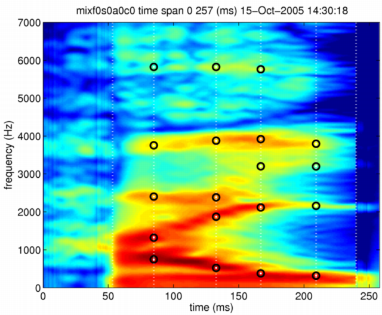
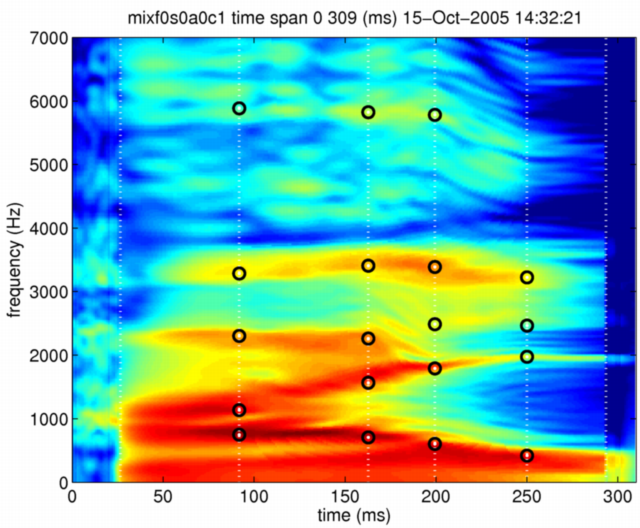
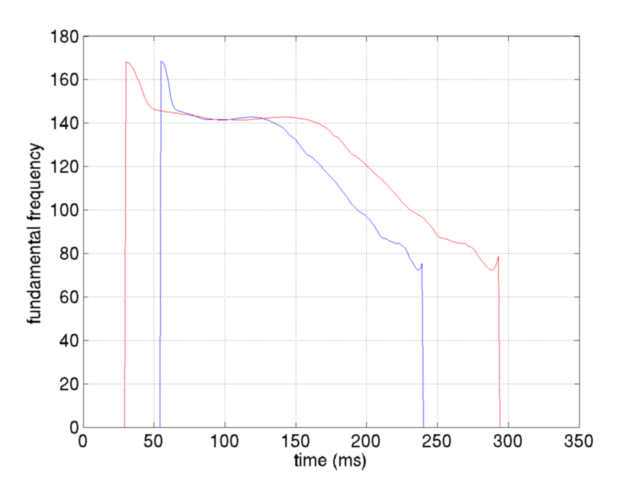
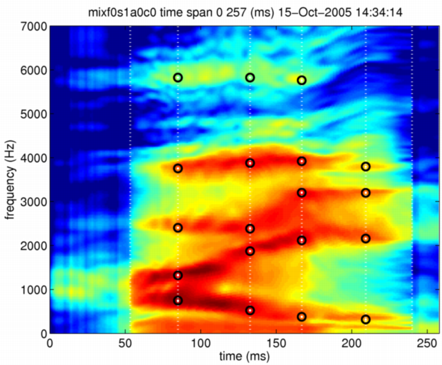

| | | モーフィングの拡張（モーフィング率のパラメタ別制御） | Contents | Index |
2003年のEurospeechでは，特定のパラメタだけをモーフィングした場合に 知覚される感情がどのように変化するかを調べました。 しかし，この時に用いたプログラムの見通しが悪かったため、実験刺激の作成は 非常に効率の悪いものとなりました。ここでは，プログラムを見直して， モーフィングにより操作されるそれぞれのパラメタのモーフィング率を， 変数に値を設定するだけで 簡単に設定できるようにしました。 用いる関数は，前の節と同じものです。 次の関数は，mObject1とmObject2の内容から mObject3を作り出します。 mRateは，mObject1とmObject2の混合の割合を指定します。 mixMethodは，スペクトログラムの混合を対数'log'で行うか， 線形領域'linear'で行うかを指定します。
mObject3 = timeFrequencySTRAIGHTmorphing(mObject1,mObject2,mRate,mixMethod);
今まではモーフィングの割合を表す変数mRateは，ただの数字でした。 この変数として，構造体を用いることができるようにしました。 （ただの数字を与えた場合には、今までと同じ動作をします。） 構造体として用いる場合には，以下のフィールドのそれぞれに 値を設定します。 値の0がmObject1に対応し，値の1がmObject2に対応します。
mixRate.F0 （基本周波数） mixRate.spectrum （スペクトログラムのレベル） mixRate.aperiodicity （非周期性指標） mixRate.coordinate （時間周波数座標）
まず，全ての属性のモーフィング率を0としてモーフィングを行います。
mRate.F0 =0; mRate.spectrum=0; mRate.aperiodicity=0; mRate.coordinate=0; mixf0s0a0c0 = timeFrequencySTRAIGHTmorphing(neutralHai,angryHai,mRate,'log');
こうして作成されたモーフィングオブジェクトは，もとの 平静音声と同じ情報を持っています。 特徴点とSTRAIGHTスペクトログラムを以下に示します。

このモーフィングオブジェクトから以下のようにして合成音声を作成することができます。
symixf0s0a0c1 = executeSTRAIGHTsynthesisM(mixf0s0a0c1);
こうして作成された合成音声は，平静の原音声とほとんど同じものとなります。
次に，時間周波数座標だけにモーフィング率として1を設定し，他のパラメタに対するモーフィング率を0としてモーフィングを行います。 すると，スペクトログラムの 色彩は変わらず，時間周波数平面の座標のみが変わったことにより， 形が変形することが分かります。

この時間周波数座標の変形により， 基本周波数の軌跡も，時間的に非一様に伸縮します。 この図では，青が全てのパラメタのモーフィング率が0の場合， 赤が時間周波数座標のモーフィング率のみを1とした場合です。

こちらのモーフィングオブジェクトからも同様に音声を合成することができます。 もう一つの例として，スペクトログラムのレベルについてだけ モーフィングされた場合の例を示します。 この場合は、目標とする怒りの音声のスペクトログラムが， 平静音声の時間周波数座標軸に合うように変形されて表示されます。

様々なモーフィング率の組み合わせで作成した合成音声を以下にリンクしておきます。
| | | モーフィングの拡張（モーフィング率のパラメタ別制御） | Contents | Index |